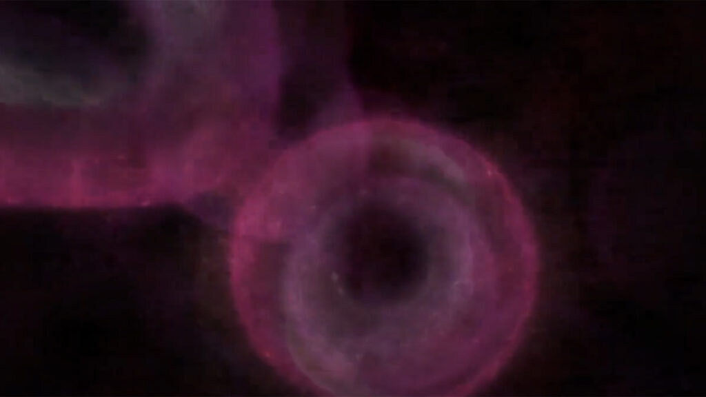
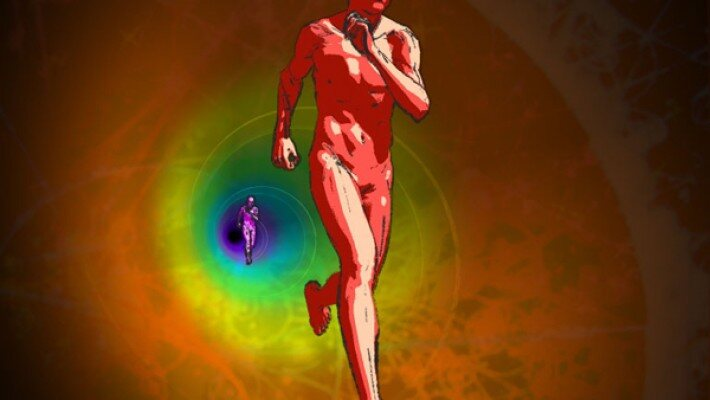

2010
Akceleracija
Kroz scenu u kojoj se dvoje trkača kreće različitim brzinama, kroz pojave kontrakcije i ekspanzije prostora i vremena kao posljedice ubrzanja, film istražuje odnos sustava različitih brzina i razliku u njihovoj percepciji. Rebus koji spaja svijet malog (kvantna mehanika) i svijet velikog (teorija relativnosti), uvodeći brzinu kao jedinstveni prostorno-vremenski skalar.
Režija, scenarij, animacija, dizajn i montaža: Andrej Rehak · glazba: Janko Novoselić, Dubravko Lapaine, Hrvoje Nikšić · Zagreb film